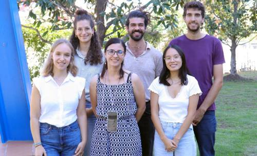
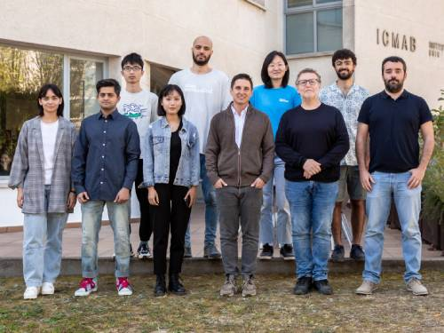

Research Groups
ACNM

Throughout 2024, our research has focused on the study of transition metal oxides (TMOs) thin films and heterostructures for spintronic applications. Our main interest has been centered on the use of antiferromagnetic (AFM) materials (NiO, Fe2O3) as insertion barriers for interfacial engineering to improve spin transmission in ferromagnetic (typically La2/3Sr1/3MnO3 (LSMO))/heavy metal (typically Pt) bilayers for spintronic applications.
In parallel, we have expanded our investigations into new materials that are structurally compatible with perovskite ferromagnets. Specifically, we explored the epitaxial growth of antiferromagnetic phases of La1−xSrxMnO3, which could enhance spin mixing conductance due to its inherent chemical compatibility with LSMO. Additionally, we have deepened our understanding of the epitaxial growth of iridates by sputtering, identifying them as promising candidates for applications requiring high spin–orbit coupling.
Highlights:
- Evaluation of Sputtering Processes in Strontium Iridate Thin
Films
Nanomaterials 14, 242 (2024) doi: 10.3390/nano14030242
V. Fuentes, Ll. Balcells, Z. Konstantinović, B. Martínez, A. Pomar
- Impact of Twin's Landscape on the Magnetic Damping of
La2/3Sr1/3MnO3thin
films
Advanced Materials Interfaces 11, 2300882 (2024) doi:10.1002/admi.202300882
S. Chen, A. Pomar, Ll. Balcells, C. Frontera, N. Mestres, B. Martínez.
- Tuning of Antiferromagnetic Phase in
La1-xSrxMnO3
Epitaxial Thin Films by Polymer-Assisted Deposition
Synthesis
Crystal Growth and Design 24, 5007-5013 (2024) doi:10.1021/acs.cgd.4c00229
M. Toda-Casaban, C. Frontera, A. Pomar, J. Herrero-Martín, J.A. Alonso, L. Balcells, N. Mestres, B. Martínez
- Spin conduction and interfacial effects in of
La2/3Sr1/3MnO3/NiO/Pt
heterostructures
Journal of Alloys and Compounds 1010, 177453 (2025) doi: 10.1016/j.jallcom.2024.177453
S. Chen, A. Pomar, Ll. Balcells, Z. Konstantinović, C. Magén, N. Mestres, B. Martínez

CRYSTALLOGRAPHY
The aim of the crystallography group is to investigate structure-property relationships of diverse materials. This let us to explore, understand and develop new knowledge on intermolecular interactions, such as the hydrogen bond, based on the analysis of the electron density, its topology and derived properties. Our expertise in crystallography and X-ray diffraction methods allows us to collaborate with several relevant research groups in the fields of organic and inorganic chemistry (including organometallics and coordination compounds), pharmaceuticals -either in the public and private sector-, minerals, etc. with applications in magnetism, heterogeneous catalysis, thermal insulation, etc. We are also interested in crystal engineering and the preparation of multicomponent crystals and their properties. We own great expertise in nanocomposited porous materials (aerogels and cryogels), currently applied to different catalytic reactions, i.e. hydrogen production. Some of us are strongly involved in international science associations (like the FMTS-WFSW) or science dissemination.
CMEOS
 In 2024 our activities
principally focused on frustrated and quantum magnetic oxides,
pivoting around three main lines: (a) layered perovskites with
high-temperature chiral magnetism; (b) Spin-driven multiferroics and
symmetry related mechanisms, and (c) frustrated magnets with strong
magnetostructural coupling. Most of the magnetic materials
investigated were prepared in our group, typically in
polycrystalline and single-crystal forms, and their study included
the use of quantum beams in neutron and synchrotron sources.
Aberration corrected imaging techniques available at the JEMCA
Center of the ALBA synchrotron were also used.
In 2024 our activities
principally focused on frustrated and quantum magnetic oxides,
pivoting around three main lines: (a) layered perovskites with
high-temperature chiral magnetism; (b) Spin-driven multiferroics and
symmetry related mechanisms, and (c) frustrated magnets with strong
magnetostructural coupling. Most of the magnetic materials
investigated were prepared in our group, typically in
polycrystalline and single-crystal forms, and their study included
the use of quantum beams in neutron and synchrotron sources.
Aberration corrected imaging techniques available at the JEMCA
Center of the ALBA synchrotron were also used.
The spin and ferroelectric orders are intrinsically coupled in multiferroics induced by cycloidal orders, but high-TS spiral multiferroics are extremely rare exceptions. By growing high-quality single crystals and utilizing advanced polarized neutrons techniques, we demonstrated a non-collinear chiral magnetic order in layered RBaCuFeO5 perovskites that can persist beyond room temperature thanks to a novel “spiral order by disorder” mechanism. In 2024 we also investigated the exceptional stability, tunability and features of the spiral magnetic order in the layered structure of (Y,A)Ba(Cu,M)FeO5 compounds under chemical pressure or external fields. An alternative method to B-cation disorder was disclosed that enables tuning frustration to enhance the stability, properties and performance of the singular chiral order in this promising class of multiferroic materials.
Other activities were aimed to investigate symmetry related mechanisms, by combining magnetic structure analysis and physical crystallography methods. Unveiling the magnetic structures and the interplay between noncollinear spin orders, crystal symmetry changes and the magnetoelectric or multiferroic properties of several oxide families (such as RCrTiO5, A2MnBO6, RNiO3 or ε-(Fe1-xMx)2O3)). In collaboration with external groups, other complex ordered phases have been investigated in some manganites (double-perovskites and Ruddlesden-Popper phases), ferrites and nickelates. Their study in terms of magnetic and structural symmetry-adapted modes allowed to identify active irreps and distortion modes condensing at the different transitions, and leading to orbital-order, charge-order, ferrodistortive or antiferrodistortive transitions, improper multiferroicity or magnetoelectric response.
In addition, the group has actively participated in the characterization of free-standing films and single crystalline ultrathin sheets by EM and ED, in collaboration with the Oxide NanoPhysics group at ICN2 led by Prof. G. Catalan. In 2024, this research was focused on (i) ferrolectrics (BaTiO3), (ii) antiferroelectrics (PbZrO3), and (iii) quantum materials (NdNiO3), in samples (s ≥ 2nm) with outstanding mechanical properties. The impact of bending and strain gradients generation on the crystal structure and the functionality of these free sheets was assessed, putting emphasis on size effects (PbZrO3) and the structural mechanisms of wrinkling in ferroelectric&ferroelastic BaTiO3.
Highlights:
- Evidence of high-temperature magnetic spiral in
YBaCuFeO5 single-crystal by
spherical neutron polarimetry
Communications Materials 5, 273 (2024)
Arnau Romaguera, Oscar Fabelo, Navid Qureshi, J. Alberto Rodríguez-Velamazán and José Luis García-Muñoz
- Pushing magnetic spirals beyond room temperature by reducing
the uniaxial pyramidal elongation in layered Cu/Fe
perovskites
Phys. Rev. Research 6, 033081 (2024)
Xiaodong Zhang, Arnau Romaguera, Oscar Fabelo, Francois Fauth, Javier Herrero-Martin and José Luis García-Muñoz
- Symmetry, magnetic transitions and multiferroic properties
of B site ordered
A2MnB'O6
perovskites (B'=[Co, Ni])
Acta Cryst. B80, 665–675 (2024) Invited paper to a special issue on Magnetic Crystallography
Jose Luis Garcia-Muñoz, Xiaodong Zhang, Gloria Subías and Javier Blasco
- Three charge-ordered phases in bilayered
Pr(Sr0.1Ca0.9)2Mn2O7
compound: From antiferrodistortive to ferrodistortive
structures
Phys. Rev. B 109, 024111 (2024)
J. Blasco, V. Cuartero, S. Lafuerza, J. L. García Muñoz, F. Fauth and G. Subías
Participation of CMEOS in specialized panels and boards (2024)
- Review Panel of the EU Research Infrastructure Project ReMade@ARI> (REcyclable MAterials DEvelopment at Analytical Research Infrastructures: trans-national access to instrumentation at 48 facilities all over Europe to advance the development of materials for a Circular Economy).
- Chemistry&Materials Scientific Panel of ALBA synchrotron;
- Expert panel of the EU project RIANA (Research Infrastructure Access in Nanoscience & Nanotechnology).
- Advisory Boards of SETN, AUSE and ESUO (the European Synchrotron and FEL User Organisation).
- Participation of CMEOS in the organization of the conferences SETN-2024 and the AUSE Congress and ALBA User's Meeting 2024.
International take-off of our students
After defending their Ph.D. Thesis at ICMAB, our students Arnau Romaguera and Xiaodong Zhang continue brilliantly their careers. Arnau has a Post-doctoral position at the SwissFEL X-ray Laser facility at the Paul Scherrer Institut (PSI). Xiaodong got a Post-doctoral position at the China Spallation Neutron Source (CSNS, Chinese Academy of Science) and the Suzhou National Laboratory for Materials Science.
DBCI

The group Dynamic Biomimetics for Cancer Immunotherapy was established in 2024, as a continuation of the Max Planck Partner Group led by Dr. Judith Guasch and funded by the Max Planck Society (Germany) since 2017 (https://www.mr.mpg.de/14083469/spatzpartnersguasch). During this year, we have set up our laboratory, which includes an area for the synthesis and characterization of biomaterials, and another to perform cell culture experiments.Our goal is to develop artificial extracellular matrices (ECM) based on functional hydrogels for oncological applications. In particular, we design, synthesize, characterize, and use different 3D synthetic and hybrid hydrogels to imitate the ECMs of different human healthy and diseased tissues, especially from the immune system. Our specific objectives are: 1) elucidate cancer- and immunotherapy-related cellular mechanisms, 2) improve the manufacture of immune cell cultures for cellular (immuno)therapies such as CAR T cell therapy, and 3) develop novel patient-derived cancer organoids.
Our research is conducted in close collaboration with various (pre)clinical groups across Spain, including the ones of Dr. Sonia Guedan for cellular immunotherapies, and Drs. Dolors Colomer and Patricia Pérez Galán for hematological preclinical models from IDIBAPS-Hospital Clínic de Barcelona, Dr. Eloisa Jantus from UPV-Hospital General Universitari de Valencia, or Drs. Bruno Sainz and Julie Earl from Hospital Ramón y Cajal (Madrid).
Highlights:
- Patent application: “Inverse opal hydrogel and its use in immunotherapy”. J. Guasch, M. Castellote-Borrell, F. Merlina, J. Faraudo, M. Domingo, S. Guedan. EPO (EP24382629.4). Priority date 11/06/2024.
- Publication: “3D Printing as a Strategy to Scale-Up Biohybrid Hydrogels for T Cell Manufacture”. E. Pérez Del Río, S. Rey-Vinolas, F. Santos, M. Castellote-Borrell, F. Merlina, J. Veciana, I. Ratera, M.A. Mateos-Timoneda, E. Engel, J. Guasch. ACS Appl. Mater. Interfaces 2024, 16, 50139.
- Publication: “Migration of human T cells can be differentially directed by electric fields depending on the extracellular microenvironment”. K. Ende, F. Santos, J. Guasch, R. Kemkemer. iScience 2024, 27(5), 109746.
EMOLMAT

The e-MolMat group focuses on designing and preparing molecular materials for electronic device development.
In 2024, the group has continued optimizing the performance of organic field-effect transistors (OFETs) prepared via a low-cost solution process. Additionally, efforts have been dedicated to developing electrolyte-gated OFETs (EGOFETs) for biosensing applications. Building on previous works in which this electronic platform was applied to detect relevant biomarkers, recent findings demonstrate that EGOFETs can also function as transducers for studying protein aggregation processes, such as amyloids aggregation, which is critical in the progress of neurodegenerative illnesses.
The group is also engaged in developing stable organic radicals for various applications. Notably, a recent project was awarded to e-MolMat for the synthesis of novel radicals as quantum qubits. Also, in a recent investigation charge transport through monolayers of organic radicals and the influence of their chirality on the transport properties was explored.
Lastly, within the framework of the Hydrocat project, a new research line is emerging within the group. This initiative focuses on utilizing electrodes modified with electroactive molecules as electrocatalysts in water-splitting reactions.
Highlights
- Electrolyte-Gated Organic Field-Effect Transistor for Monitoring
Amyloid Aggregation.
S. Ruiz-Molina, C. Martinez-Domingo, S. Ricci, S. Casalini, Marta Mas-Torrent, ACS Appl. Electron. Mater. 2024, 6, 12, 8998.
- Interrogating the CISS effect in chiral and paramagnetic organic
radicals: the impact of the molecular spin over the total spin
polarization.
J. A. De Sousa, P. Mayorga-Burrezo, S. Míguez-Lago, J. Catalán-Toledo, R. Ramos-Tomás, A. Ortuño, L. A. Zotti, J. J. Palacios, A. G. Campaña, J. Veciana, N. Crivillers, J. Mater. Chem. C, 2024, 12, 11550.
Projects awarded
- OPTRIBITS: Optically Addressable Trityl-Radical-Based Molecular Qubits (01/07/2024-30/06/2027), ERANet-Quantera, National ref. PCI2024-153480. In collaboration with University of Stuttgart (coordinator)and the University of Antwerpt. PI: Núria Crivillers.
- HYDROCAT: “Towards Efficient Hydrogen Production with New Hybrid Electrocatalysts” (1/2/2024-30/1/2026), Generalitat de Catalunya, Ajut per finançar projectes de recerca per la mitigació al canvi climatic; ref. 2023CLIMA 00064. In collaboration with ICN2 and UB. Coordinator: Marta Mas-Torrent
FOXEM

The Ferroelectric oxide films for energy and memory devices group (FOXEM) intends to produce high-quality novel ferroelectric materials that are industry-compatible, as to explore their properties from the fundamental to the device level. The electronics industry is confronting a number of constraints in order to meet the growing demand for energy generation/storage and for data storage, computing, and transmission. New materials are required, and CMOS-compatible ferroelectrics based on HfO2 are in the limelight. We study epitaxial oxide thin films of these oxide as model systems to better understand and improve their ferroelectric characteristics. Our capabilities include growth, structural research, advanced electrical properties evaluation, and prototyping of both conventional and developing devices.
Highlights:
- Fina, F. Sánchez. Seeing ferroelectric phase transitions. Nature Materials 23, 1015-1016 (2024).
- H. Tan, A. Quintana, N. Dix, S. Estandía, J. Sort, F. Sánchez, I. Fina. Photovoltaic-driven dual optical writing and non-destructive voltage-less reading of polarization in ferroelectric Hf0.5Zr0.5O2 for energy efficient memory devices. Nano Energy 123, 109384 (2024).
- T. Zakusylo, A. Quintana, V. Lenzi, J.L. Ortola, J. Silva, L. Marques, J. Lyu, J. Sort, F.Sanchez, I. Fina. Robust multiferroicity and magnetic modulation of the ferroelectric imprint field in heterostructures comprising epitaxial Hf0.5Zr0.5O2 and Co. Materials Horizons 11, 2388 (2024).

FUNNANOSURF
At FunNanoSurf we are based on the creation of molecular-based devices using a family of molecules called curcuminoids (CCMoids) and related systems. Our strategy lies in the use of CCMoids as molecular platforms, and together with their design, the implementation of different immobilization strategies of these molecules, allows us to create smart substrates for biomedical, electronic and sensing applications. On the other hand, the group is also focus in the preparation of biommiteic materials based on a controllable functionzalization of surfaces for interaction with biological systems.
During 2024, this approach has been reflected in the following activities:
- -Cardona-Lamarca, T. Y Baum, R. Zaffino, D. Herrera, R. Pfattner, S. Gómez-Coca, E. Ruiz, A. González-Campo, H. S.-J. van der Zant, N. Aliaga-Alcalde, 2024. “Experimental and theoretical studies of the electronic transport of an extended curcuminoid in graphene nano-junctions”. Chemical Science, 15(39), 16347-16354
- “Boosting responsive substrates based on ASYmmetric CURCUMINOIDS: synthesis and deposition, interface and ACTivity studies (PID2023-151929NB-I00, ASYCCMoidsACT)” MICIU
- “Launch of a universal sublimation technology for molecular transfer on SUBstrates (101138186, smolSUB)” European Research Council, HORIZON.
- Keynote speaker and Invited talks, by ICREA Prof. Núria Aliaga-Alcalde, at Sensors 2024, the 245th ECS Meeting and II Workshop on Advanced quantum phenomena in 2D and carbon-based materials.
- “El País” Newspaper interview by Dr. Arántzazu González Campo, “Stem cells and high technology: two Spanish labs face the challenge of creating artificial blood”
- Two defended theses in the group by Dr. Teresa Cardona Lamarca (“Curcuminoid-based materials toward their use as active components in three-terminal devices”, 16th February 2024) and Dr. Raquel Gimeno-Muñoz (“Design of new T-shaped Curcuminoid systems and deposition studies for the creation of sensors”, 26th November 2024)
- Núria has been member evaluator of R&C 2024 as well as of the “la Caixa” Postgraduate Scholarships abroad Junior 2024.
LMI
 Building
upon previous progress in the multimodal antitumor activities of
small boron cluster molecules—spanning gamma radiation, X-ray,
Mössbauer spectroscopy, BNCT, and PBFR—against
glioblastoma-resistant tumors, 2024’s research further
explores their multi-action therapeutic potential against breast
cancer and BNCT-resistant head and neck cancers in
vivo,[1-2] which offer significant clinical
benefits for resistant tumors by enabling dose reduction while
maintaining therapeutic efficacy—directly contributing to
improved patient well-being. Notably, the synthesis of an active
small molecule 100% enriched 10B has been reported,
marking a substantial advancement in BNCT cancer treatment. The
recent review[3] on the rise of boron-containing
compounds, covering advancements in synthesis, medicinal chemistry,
and emerging pharmacology, has garnered substantial interest, with
75 citations in its first 12 months.
Building
upon previous progress in the multimodal antitumor activities of
small boron cluster molecules—spanning gamma radiation, X-ray,
Mössbauer spectroscopy, BNCT, and PBFR—against
glioblastoma-resistant tumors, 2024’s research further
explores their multi-action therapeutic potential against breast
cancer and BNCT-resistant head and neck cancers in
vivo,[1-2] which offer significant clinical
benefits for resistant tumors by enabling dose reduction while
maintaining therapeutic efficacy—directly contributing to
improved patient well-being. Notably, the synthesis of an active
small molecule 100% enriched 10B has been reported,
marking a substantial advancement in BNCT cancer treatment. The
recent review[3] on the rise of boron-containing
compounds, covering advancements in synthesis, medicinal chemistry,
and emerging pharmacology, has garnered substantial interest, with
75 citations in its first 12 months.
Our research group has made significant breakthroughs in carborane-based Metal-Organic Frameworks (MOFs), with a strong focus on luminescence and magnetic properties. Our innovative approach to synthesizing multi-metal rare-earth multivariate (MTV) MOFs has led to the discovery of multifunctional, self-refrigerating MOFs.[4] Additionally, we have unveiled the electronic structure and excited-state energies of our carborane ligands, highlighting the crucial role of molecular structure and symmetry in defining the photophysical properties of our derivatives in the solid state and their antennae effect for Eu and Tb MOFs.[5] We have developed photo-activable ruthenium (II) complexes for photodynamic therapy (PDT), which efficiently internalized in SKBR-3 cells and induced significant cell death after 10 min of treatment, making them promising theragnostic agents.[6] Additionally, PDI-based ortho-carborane derivatives showed near 100% fluorescence quantum yields in solution. Despite fluorescence quenching in the solid state, the compound containing one o-carborane exhibited bright red excimer-type emission. Its high boron content highlights its potential for fluorescence bioimaging and boron neutron capture therapy (BNCT).[7]
Highlights
- Patent: “Process for the photocatalytic oxidation of alkanes and aromatic hydrocarbons”. Application number: EP23382576.9. Inventors: Francesc Teixidor, Rosario Núñez, Clara Viñas, Marisa Romero and Isabel Guerrero. June 2024.
- The Project “Green Transformation: Biogas to metanol, an ecological and sustainable via (ACC_2023_EXP_SIA002_40_0002222)” has been funded by SIDER, Desenvolupament Rural, Ayudas a las Actividades de Demostración Colaborativas de transferencia del conocimiento (intervención 7201), in the framework of the Estrategic Plan of the PAC 2023-2027. Departament d’Agricultura, Ramaderia, Pesca i Alimentació, Generalitat de Catalunya. Scientific Team: Francesc Teixidor, Rosario Núñez, Clara Viñas, Isabel Guerrero and Isabel Romero. 2024-2026
- Participation in the Antimicrobial Resistance Day (AWR) with the oral communication “Photoluminescent boron-cluster dyes as biocompatible photosensitizers with promising antimicrobial activity”. Javier Ordóñez-Hernández and Rosario Núñez. 18 November, 2024.
[1] L. Gutierrez-Galvez, T. Garcia-Mendiola, E. Lorenzo, M. Nuez-Martinez, C. Ocal, S. Yan, F. Teixidor, T. Pinheiro, F. Marques and C. Vinas J. Mater. Chem. B, 2024, 12, 9550-9565.
[2] M. A. Palmieri, A. Monti Hughes, V. A. Trivillin, M. A. Garabalino, P. S. Ramos, S. I. Thorp, P. Curotto, E. C. C. Pozzi, M. Nuez Martínez, F. Teixidor, C. Viñas and A. E. Schwint, Pharmaceuticals 2024, 17, 1367.
[3] R. J. Grams, W. L. Santos, I. R. Scorei, A. Abad-García, C. A. Rosenblum, A. Bita, H. Cerecetto, C. Viñas and M. A. Soriano-Ursúa, Chem. Rev. 2024, 124, 2441-2511.
[4] Z. Li, A. Arauzo, C. Roscini, J. G. Planas and E. Bartolomé, J Mater Chem A Mater, 2024, 12, 21971–21986.
[5] Z. Li, C. Roscini, R. Núñez, F. Teixidor, C. Viñas, E. Ruiz and J. G. Planas, J Mater Chem C Mater, 2024, 12, 2101–2109.
[6] C. Parella, A. Blanquer, S. Sinha, E. Hümpfner, E. Mora, X. Fontrodona, Z. Kelemen, C. Nogués, R. Núñez, I. Romero Dyes & Pigments, 2024, 224, 111985.
[7] R. Rodríguez, S. Sinha, L. Parejo, J. Hernando, R. Núñez, Dalton Trans. 2024, 53 (44) 17841-17851.

LEEM
LEEM (Laboratory for the Electronic Structure of Materials) is at the forefront of the development of efficient methods for quantum-mechanical simulations, and also holds a very strong position in their application to a wide range of problems in Materials Physics and Chemistry, with a solid network of international collaborations.
We have a major role in the development of the SIESTA ab-initio simulation code (www.siesta-project.org) and contribute fundamental new methods to Abinit.
We apply our codes to the understanding and prediction of novel functionalities in materials, in areas such as flexoelectricity, thermal transport, and the electronic and vibrational instabilities in low-dimensional systems.
Highlights
- In-Plane Flexoelectricity in Two-Dimensional Crystals, M
Springolo, M Royo, M Stengel
Physical Review Letters 131 (23), 236203, DOI: 10.1103/PhysRevLett.131.236203
- Accurate Prediction of Hall Mobilities in
Two-Dimensional Materials through Gauge-Covariant
Quadrupolar Contributions, S Poncé, M Royo, M
Gibertini, N Marzari, M Stengel
Physical Review Letters 130 (16), 166301, DOI: 10.1103/PhysRevLett.130.166301
- How to verify the precision of density-functional-theory
implementations via reproducible and universal
workflows, E Bosoni, L Beal, M Bercx, P Blaha, S
Blügel, J Bröder, M Callsen, et al.
Nature Reviews Physics, 1-14, DOI: 10.1038/s42254-023-00655-3
- Structural Approach to Charge Density Waves in
Low-Dimensional Systems: Electronic Instability and
Chemical Bonding, JP Pouget, E Canadell
Reports on Progress in Physics, 87, 026501, DOI: 10.1088/1361-6633/ad124f
- Light-driven dynamical tuning of the thermal
conductivity in ferroelectrics, C
Cazorla, S Bichelmaier, C Escorihuela-Sayalero, J
Íñiguez, J Carrete, and R
Rurali
Nanoscale 16 (17), 8335 (2024), DOI: 10.1039/D4NR00100A
LASER

In 2024, the LASER group focused on creating advanced carbon-based nanocomposites for energy applications, employing sophisticated laser techniques. Our work centered on two key areas: electrochemical energy storage and solar water splitting.
For energy storage, we developed hybrid supercapacitor electrodes. These were crafted by crystallizing pseudocapacitive metal oxide nanoparticles onto carbon nanostructures, enhancing capacitance. Laser-based approaches were used for the laser surface processing of films composed of (i) biowaste-derived activated carbon – metal organic precursors and (ii) commercial nanocarbon – metal organic framework (MOF) nanostructures, with the aim to crystallize electroactive nanoparticles on the nanocarbon surface. Both methods yielded electrodes with significantly improved capacitance. We conducted in-depth studies of charge storage mechanisms and worked to optimize electrode performance besides scale up production for industrial use. For the transfer of the results to the industry, we obtained a PRODUCTE (AGAUR) project.
In solar water splitting, we synthesized graphene-based hybrid photocatalysts for hydrogen production. By irradiating aqueous dispersions of graphene oxide and metal precursors, they achieved simultaneous reduction of graphene oxide and decoration with photoactive semiconducting metal oxide nanostructures. This laser-driven process yielded noble-metal-free photocatalysts with interesting hydrogen generation capabilities.
Highlights:
- “Fabrication of asymmetric supercapacitors by laser processing of activated carbon-based electrodes produced from rice husk waste”. Assumpta Chinwe Nwanya, Arevik Musheghyan Avetisyan, Enikö György, Ángel Pérez del Pino. Surfaces and Interfaces 54 (2024) 105200. DOI: 10.1016/j.surfin.2024.105200
- “Microwave post-treated activated carbons for capacitance boosted non-aqueous supercapacitors”. Shima Fasahat, Mohsen Khosravi, Ghasem Dini, Angel Pérez del Pino, Constantin Logofatu. Journal of Alloys and Compounds 984 (2024) 173948. DOI: 10.1016/j.jallcom.2024.173948
MULFOX

MULFOX has continued its fruitful research on oxide thin films, with promising prospects for emerging applications. Our work focuses on understanding how atomic structure and composition influence the physical properties of oxides, aiming to uncover intricate relationships between structure, chemistry, and functionality in oxide nanostructures.
In spintronics, our efforts have progressed along multiple fronts, including spin thermoelectricity, spin and orbital torque effects, interfacial chiral magnetic interactions, and voltage-controlled magnetic anisotropy. A key highlight is the magnetoresistive detection of perpendicular switching in a magnetic insulator, achieved via the spin valve effect [1].
We also explored nitrogen incorporation in complex oxides as a strategy to tailor magnetism. In rare earth tantalum oxynitrides and Ba2MnWO6 [2, 3], nitrogen modified anion ordering and enhanced magnetic frustration by suppressing long-range interactions, demonstrating its potential to control magnetic ground states.
Our materials design advanced with the development of oxide heterostructures and freestanding membranes using low-toxicity, earth-abundant elements. We engineered photoferroelectric interfaces with tunable photoresponse and fabricated single-crystalline membranes via solution-processed sacrificial layers, enabling studies of oxide properties free from substrate constraints [4, 5]. In parallel, we showed that compressive strain in Ruddlesden–Popper La2NiO4 films increases magnetic frustration by amplifying the incompatibility between nearest- and next-nearest-neighbor exchange interactions within the Ni spin lattice [6].
In to the realm of quantum materials, we also expanded our research into low-temperature detector materials for fundamental physics. By analyzing phonon dynamics relevant to dark matter detection and elucidating the superconducting transition in transition-edge sensors, we contributed to improving the sensitivity of devices used in rare-event detection [7, 8]. Finally, we investigated the interplay between the Jahn-Teller effect and spin-orbit coupling in orbitally degenerate systems [9]. Rather than competing, these interactions can cooperate to generate entangled spin-orbital states, putting new perspectives in stabilizing novel quantum phases.
Highlights:
[1] S. Damerio, A. Sunil, M. Mehraeen, S. S.-L. Zhang., and C. O.
Avci, “Magnetoresistive detection of perpendicular switching
in a magnetic insulator” Commun. Phys. 7, 114 (2024)
[2]
Guarín, Jhonatan R., et al. "Anionic and Magnetic Ordering in
Rare Earth Tantalum Oxynitrides with an n= 1 Ruddlesden–Popper
Structure." Chemistry of Materials 36.10 (2024):
5160-5171.
[3] Oró-Solé, Judith, et al.
"Nitride Tuning of Magnetic Frustration in the Double Perovskite
Ba2MnWO6." Chemistry of Materials 36.20 (2024):
10267-10275.
[4] P.Machado et al. Interface engineering
in all-oxide photovoltaic devices based on photoferroelectric
BiFe0.9Co0.1O3 thin films ACS
Applied Electronic Materials 6 (11) 8251-8259
(2024)
[5] P. Salles et al “Unfolding the
challenges to prepare single crystalline complex oxide membranes by
solution processing” ACS Applied Materials and Interfaces 16 (28) 36796-36803
(2024)
[6] I. Bialo et al, “Strain-tuned
incompatible magnetic exchange-interaction in La2NiO4” Comm.
Physics 7, 230
(2024)
[7] M.Raya-Moreno, B.J.Kavanagh,
L.Fàbrega and R.Rurali, "Phonon dynamics for Dark Matter
Detection", Phys. Rev. D 110, 112007 (2024)
[8] L.Fàbrega,
A.Camón, C.Pobes, P.Strichovanec, "On the physical origin of
the superconducting transition in Transition-Edge Sensors", J. Appl.
Phys. 136, 154503 (2024)
[9]
Miñarro, A.S., Villa, M., Casals, B. et al. Spin-orbit
entanglement driven by the Jahn-Teller effect. Nat Commun 15, 8694 (2024).
NANOMOL-BIO

NANOMOL-BIO (https://nanomol-bio.icmab.es/) is devoted to the synthesis, physico-chemical characterization and development, up to pre-clinical regulatory phases, of molecular and polymeric (nano)materials for biomedical applications. The molecular materials that we develop are always validated in the frame of collaborations with national and international research groups allocated in hospitals or in biomedical research centers, and private companies. An important EU project, Nano4Rare (https://nano4rare.eu/), devoted to the preclinical development of a nanomedicine candidate for Fabry rare disease treatment to enter clinical phase, which is patent protected, started this year with coordination by our group. Also coordinated by the group is the Nabiheal EU project (https://www.nabiheal.eu/) devoted to the development of metal-free biomaterials with antimicrobial properties for the treatment of complex wounds. A project from La Caixa Foundation has also been awarded to work on chiral photocatalytic nanozymes for Efficient ROS mediated Cancer Therapy. We belong to CIBER network (https://www.ciberisciii.es/), as many of our collaborators and our intensive technology transfer activity has the TECNIO recognition (https://tecnio.org/) given by ACCIO Agency of the Catalan government. In collaboration with Nanomol Technologies SL, first spin-off of our group, we have created DELBIOS pharmaceutical SL, spin-off of CSIC, to promote the advancement towards the clinical phases and the market of some of the biomedical products we develop. Within 2024 there were successfully defended 5 doctoral thesis, 2 of them industrial PhD.
Our activity within 2024 was principally focused on:
- Nanovesicles for biomedical applications: To further advance the development and application of fluorescent nanovesicles, we have been awarded a Knowledge Industry grant from AGAUR (Generalitat de Catalunya) to carry out the project titled “Ultrabright fluorescent agent for image guided surgery in cancer” (BRIGHT-GUIDE), together with our collaborators from the Fundació Institut d'Investigació en Ciències de la Salut Germans Trias i Pujol. The project is funded with 150 k€ for 18 months. Furthermore, we are participating in the MOMENTUM program of CSIC (https://momentum.csic.es/en/), with our project “Digital twin to support the design and manufacture of functional nanomaterials with applications in biomedicine” (nanoML4Med), carried out in collaboration with Dr. Olga Conde from the University of Cantabria and Dr. Horacio Vargas-Guzman (ICMAB-CSIC).
- In parallel, new knowledge on targeted nanoliposomes to improve enzyme replacement therapy of Fabry disease has been published in Science Advances (DOI: 10.1126/sciadv.adq4738) and an Interlaboratory comparison of endotoxin contamination assessment of nanomaterials has been published in Nanoscale (DOI: 10.1039/d4nr02821j). Also, knowledge on new plant-based drug delivery platform based on alkyl polyglucosides and β-sitosterol nanovesicles for topical delivery has been published in Applied Materials Today (DOI:10.1016/j.apmt.2024.102467). Several patents have been requested to protect the knowledge we generate stimulus-responsive gelable liquid composition comprising vesicles (EP24383171), Method for obtaining nanodispersed systems (EP24382895) and Vesicles based on glucose-derived surfactants and phytosterols (WO/2024/0282839) all of them with Nanomol Technologies SL as a co-owner.
- Development of surface coating strategies using multifunctional biomaterials to prevent infections: The COAT-IT project devoped to prevent infections of cardiac implantable electronic devices through a bimodal coating using thermally smart hydrogels with antimicrobial agents, has been awarded by La Marató de TV3 together with our collaborators from Fundació de Recerca Clínic Barcelona - Institut d’Investigacions Biomèdiques August Pi i Sunyer (IDIBABS), Institut de Recerca i Tecnologia Agroalimentàries (IRTA), Fundació Institut d’Investigació i Innovació Parc Taulí and in the framework of CIBER-INFEC and CIBER-BBN. In parallel, it has also been awarded the EU MSCA project GreenX3 (Ref. 101120061) to develop antimicrobial nanovesicles using innovative and sustainable materials, processes and technologies for a greener and circular economy.
- Imaging applications of organic radical systems: Development of fully water-soluble dendrimer-based bimodal imaging probes that combines magnetic and fluorescent properties for magnetic resonance imaging (MRI) and fluorescence imaging (FI), using organic radicals instead of metals as the magnetic source. Complementary dual modality enhances detection sensitivity and diagnostic accuracy while the metal-free approach minimizes toxicity risks (DOI: 10.1021/acsami.4c13578). Supported in part by the CIBER-BBN project Radical-NEED (BBN23PIV01), with key live-cell internalization and fluorescence measurements performed through the NFFA-Europe platform. The recent progress in developing fully organic MRI contrast agents by functionalizing dendrimers with surface-bound radicals was reviewed (DOI: 10.1016/j.aiepr.2023.07.001). In parallel, new applications and knowledge on organic radicals have been explored (DOI: 10.1039/D3QO01358H; DOI: 10.1002/ejoc.202400384).
- In parallel, to further advance the development and application of fluorescent based organic nanoparticles, we start forming part of the Cost Action CA22131 LUCES and keep working in the framework of the MSCA EU project Micro4Nano.
Highlights
- Development of fully water-soluble dendrimer-based
bimodal imaging probes that combine magnetic and fluorescent
properties.
“Water-Soluble Bimodal Magnetic-Fluorescent Radical Dendrimers as Potential MRI-FI Imaging Probes.” Yufei Wu, Vega Lloveras, Anjara Morgado, Ezequiel Perez-Inestrosa, Eleftheria Babaliari, Sotiris Psilodimitrakopoulos, Yolanda Vida, José Vidal-Gancedo. ACS Appl. Mater. Interfaces 2024, 16, 65295−65306. DOI: 10.1021/acsami.4c13578 - Nanothermometer based on radical based organic
nanoparticles to monitor temperature of biological
tissues.
“Nanothermometer Based on Polychlorinated Trityl Radicals Showing Two-Photon Excitation and Emission in the Biological Transparency Window: Temperature Monitoring of Biological Tissues.” Nerea Gonzalez-Pato, Davide Blasi, Domna M. Nikolaidou, Francesco Bertocchi, Jesús Cerdá, Francesca Terenziani, Nora Ventosa, Juan Aragó, Andrea Lapini, Jaume Veciana, Imma Ratera. Small Methods, 2024, 8, 2301060. DOI: 10.1002/smtd.202301060 - Development of nanocarriers loaded with enzyme for
enzyme replacement therapies.
“Targeted nanoliposomes to improve enzyme replacement therapy of Fabry disease.” Judit Tomsen- Melero, Marc Moltó-Abad, Josep Merlo-Mas, Zamira V. Díaz- Riascos, Edgar Cristóbal- Lecina, Andreu Soldevila, Thomas Altendorfer- Kroath, Dganit Danino, Inbal Ionita, Jan Skov Pedersen, Lyndsey Snelling, Hazel Clay, Aida Carreño, José L. Corchero, Daniel Pulido, Josefina Casas, Jaume Veciana, Simó Schwartz Jr. ,Santi Sala, Albert Font, Thomas Birngrube, Miriam Royo, Alba Córdoba, Nora Ventosa, Ibane Abasolo, Elisabet González-Mira, Judit Tomsen- Melero, Science Advances, 2024, 10, eadq4738. DOI:10.1126/sciadv.adq4738 - Two book chapters about drug nanocarriers
characterization.
“Characterisation of Drug Nanocarriers.” DOI: https://doi.org/10.1039/9781837672981, edited by Ivana Vinković Vrček; Jesus M de la Fuente; Evgeny K Apartsin: Chapter 1: Introduction to Nanomedicine and Nanopharmaceuticals (DOI: 10.1039/9781837672981-00001), and Chapter 4: Nanovesicles (DOI: 10.1039/9781837672981-00120).
NN

The research line on natural polymers keeps expanding; we had the honor to participate in the European Polysaccharide Network of Excellence (EPNOE) research roadmap 2040; we demonstrated the printability of all-cellulose printed aerogels for bone tissue engineering, a project led by our collaborator Dr. Carlos García of the University of Santiago de Compostela; we proposed a new method to fabricate intricated 3D bacterial cellulose constructs and, together with the group of Kasper Moth-Poulsen, we showed that bacterial cellulose is an excellent sustainable substrate in photonic devices, in particular, to crystallize upconverting nanocrystals. The collaboration with the Barraquer Clinics on the investigation of new ophthalmologist treatments is advancing at a good pace. The first human clinical study finished with excellent outcomes.
The research on evaluating new molecules and nanomaterials in the C. elegans model progressed alongside ongoing publication efforts. In collaboration with Dr. M. Calderón’s group, we investigated novel polymeric gels for mucosal drug delivery, while with Prof. María José Blanco-Prieto’s team, we explored etoposide lipid nanomedicine—continuing our work with both long-standing and new collaborators. This year, we published findings on bacterial nanocellulose fibers (BNCf), reinforcing the group’s research focus. Our study demonstrated BNCf’s lipid-lowering properties, positioning it as a promising dietary fiber. Additionally, in collaboration with Dr. Esther Dalfó, we confirmed BNCf potential to influence diet even in C. elegans models of early-stage Parkinson’s disease.
Together with our collaborators at Parc Taulí Hospital, Prof. Artigas's group, we demonstrated that polymeric nanocarriers can be efficiently delivered to the lung by nebulization and that priming mesenchymal stem cells boosts the immunomodulatory and regenerative activity of their secreted extracellular vesicles.
Research on ferrites for information technologies is advancing in different areas: developing strategies to control the size and shapes of ε-Fe2O3 nanoparticles, exploring the effects of different metallic substitutions of Fe3+ in this structure, and developing a demonstrator of a self-biased circulator in the mm-wave range based on high anisotropy ferrites. The group has also consolidated activities in the synthesis of high-quality nanoparticles for several applications, including energy and nanomedicine. In that regard, we are developing nano heterostructures for hydrogen production and approaches for the mass production of magnetic nanocrystals for nanomedicine. We have also set up a laboratory for the synthesis and characterization of nanoparticles for magnetic hyperthermia.
Importantly, we have signed a licensing option with Enebio (https://enebio.com/) for the proprietary technology we co-developed with IMB-CNM on electrochemical sensors for on-site analysis of water contaminants.
Highlights
- Warm welcome to the new group members: Juan Pellico, who joined our group and secured a RyC contract; post-docs Asier Rodriguez Muguruza and Muling Zeng; and new PhD candidates Guillem Wetherell, Nuan Zhang and Chuanli Zhang.
- We were awarded two technology transfer Innovadors projects from the Generalitat de Catalunya-AGAUR.
- Our students keep rocking it!
- Nanthilde Malandain defended her Ph.D. thesis, “Advanced scaffolds incorporating bacterial cellulose for improved 3D cell microenvironments,” on February 3, 2025, with flying honors!
- Anna Solé honored with the extraordinary award for her Master’s Degree in Nanoscience and Nanotechnology at the University of Barcelona on the 17th of June 2024.
- Master’ students Julia Urquizar, Joel Vitales, Sofia Soria, Sergi Diaz, Manon Souvay and Daniela Diaz obtained the highest marks for their MSc. Thesis. We also hosted three PhD students; Saima Perveen from Pakistan and Xiaohe Wang and Shengqin G
NANOPTO

In 2024, our group made significant advancements in several research areas. Our achievements serve as proof of our commitment to enhancing scientific understanding and developing technology with practical uses.
In Organic photovoltaics, on the one hand, we demonstrated that the implementation of the spectral splitting concept in lateral multi-junction (RAINBOW) architectures can lead to substantial increments in power conversion efficiency by minimizing absorption as well as thermalization losses. On the other hand, we used our high throughput screening methods to evaluate a number of important aspects, including the chemical structure of the acceptor, the role of the molecular weight of the donor, as well as evaluating narrow band gap materials for semitransparent and tandem cells, and wideband gap materials for indoor and multi-junction cells.
In the Photonic Architectures for Light Management research line, the work published in Advanced Materials demonstrated generation of highly anisotropic circularly polarized photoluminescence from conventional perovskite nanocrystal emitters, achieving dissymmetry emission factors of glum up to 0.56. The underlying chiral nanophotonic architecture was produced by scalable soft-nanoimprint lithography. Moreover, combination of dielectric and metallic chiral motifs in the architecture was shown to generate simultaneous multi-wavelength chiral emission.
Regarding the fundamental physical properties of metal halide perovskites, we published a paper on the influence of the interplay between the inorganic cage and the dynamic disorder associated to the unfolding of the A-site cation dynamics on the inorganic-cage phonon linewidths, as determined by Raman scattering.
In Thermoelectrics, we published two fundamental and broad studies with strong impact in the community. First, we introduced a novel doping strategy based on Lewis pairs that showed a very efficient and universal doping capability, and, importantly, significantly more stable than conventional methods. We also published a large study on the thermal properties of semiconducting polymers, demonstrating two regimes of correlation between thermal and electronic transport depending on the microstructure. We also published two papers on carbon nanotubes for thermoelectrics, one on the role of hidden variables (such as thickness) on stability and the other one on upscaling which describes a technology that we have patented to fabricate thick, large area CNT films.
Further knowledge transfer activities resulted in a consultancy contract established with LINSEIS GmbH, a German company recognized as a global leader in thermal analysis instrumentation, to implement advanced measurement methods for thermal analysis of materials. Additionally, these innovative methods have led to the publication of a scientific article focusing on the thermal conductivity tensor in two-dimensional materials, such as PdSe₂. This work highlights the significant potential of the developed methods for addressing thermal anisotropy in 2D materials
Highlights
- Prof. Mariano Campoy-Quiles received the Margarita Salas Medal for supervision.
- Dr. Sergi Riera-Galindo received the MAV award.
- Prof. Alejandro R. Goñi was appointed as a Plenary speaker at 109th Annual Meeting of the Argentine Physical Society (AFA2024), presenting the work on metal halide perovskites.
- The Pathfinder Challenge project RADIANT: Chiral Light Emitting Diodes based in Photonic Architectures, coordinated by Dr. Agustín Mihi, was granted and started last November 2024.
- Dr. Juan Sebastián Reparaz signed a consultancy contract with the company LINSEIS GmbH to develop advanced tools for thermal characterization of materials.
- In 2024, three PhD students from Nanopto have successfully
defended their PhD thesis:
1) Ylli Conti, on 4th June 2024: “Harnessing Colloidal Plasmonic Metasurfaces for Advanced Optical Phenomena”
2) Miquel Casademont, on 24th October 2024: "Towards organic multi-junction RAINBOW solar cells"
3) Jiali Guo, on 30th October 2024: "Effect of Doping and Molecular Weight on the Thermal Conductivity of Conjugated Polymers for Thermoelectrics"

SURFACES
The PCSI group focuses on advanced characterization methods and control of structural and electronic properties of nanostructures, surfaces and interfaces, with three main research lines in organic semiconductors, catalysis and ice nucleation.
Highlights
- Revealing polar polymorphism in organic semiconductors by Kelvin Probe Force microscopy
The synthesis of asymmetric compounds by molecular engineering is a recently developed strategy for obtaining crystalline organic semiconductors (OSC) with high field-effect mobility. We have demonstrated the development of polar polymorphism at the semiconductor/dielectric interface in thin films of one asymmetric benzothieno[3,2-b][1]-benzothiophene derivative, which may represent a common issue for other asymmetric OSCs. Our study underscores that Kelvin Probe Force microscopy is a valuable tool to evaluate electrostatic disorder and the conceivable emergence of polar polymorphs in thin films. This result is pivotal for the strategic design and advancement of high-performance OFETs
S. Yan et al. Chem. Mater. 2024, 36, 585−595
https://doi.org/10.1021/acs.chemmater.3c02926
- Ultra-compact electrical double layers at electrified TiO2(110) interfaces aqueous
Metal-oxide interfaces are important in areas such as photocatalysis and mineral reforming. The structure of the electrical double layer, which is formed when anions or cations compensate for the charge derived from adsorbed H+ or OH-, is fundamental to understanding the chemistry at these interfaces.
Using a surface science approach involving atomic-level characterisation by surface X-ray diffraction (SXRD), the structure of pH-dependent model electrified interfaces of TiO2(110) with HCl and NaOH has been determined.
I. M. Nadeem et al. J. Am. Chem. Soc. 2024, 146, 49, 33443-33451
https://doi.org/10.1021/jacs.4c09911
- Test Fields for Enhanced Snowmaking Using Mineral Powder
Field tests under real snowmaking conditions were conducted at the Laboratori de la Neu in La Molina ski resort, using commercial snow guns. The study evaluated the sustainability benefits of mixing water with minerals exhibiting high ice nucleation efficiency. Snow volume and physical properties were measured and compared between snow produced with and without minerals to assess performance improvements.
SOFTMATTER
 The
SoftMatter Theory group combines different theoretical approaches
and simulation techniques to study materials made by building blocks
with mutual interactions that have energies of the order of the
thermal energy. These materials, at room temperature, are able to
explore many possible configurations and easily adapt themselves to
changing conditions or stimuli (hence the term
“softmatter”). Our interests include thermoresponsive
polymers, magnetic dispersions, (bio)functionalized nanoparticles,
biopolymers, hydrogels and self-assembled structures (vesicles,
liposomes, membranes). We have also a special interest in the
interaction between biomolecules and materials and biomimetic
materials.
The
SoftMatter Theory group combines different theoretical approaches
and simulation techniques to study materials made by building blocks
with mutual interactions that have energies of the order of the
thermal energy. These materials, at room temperature, are able to
explore many possible configurations and easily adapt themselves to
changing conditions or stimuli (hence the term
“softmatter”). Our interests include thermoresponsive
polymers, magnetic dispersions, (bio)functionalized nanoparticles,
biopolymers, hydrogels and self-assembled structures (vesicles,
liposomes, membranes). We have also a special interest in the
interaction between biomolecules and materials and biomimetic
materials.
During 2024 we have obtained significant advances in the field of electrostatic interactions in softmatter, showing unexpected ways in which these interactions shape softmatter. For example, our theoretical calculations predicted that only the most recent variants of the SARS-CoV-2 virus (the Omicron variant) can be attracted to charged surfaces, a result with wide implications for disinfection processes (electrostatic trapping in fibers) or indirect transmission of the virus (adhesion over common materials that are charged in contact with humidity). Our theoretical calculations also show that graphene (one of the most promising new 2D materials) should be always charged in water suspension, an effect with broad practical implications that has been demonstrated experimentally. In the field of nanoparticles, we have participated in a broad, authoritative review (50 pages) of the field of theory of nanoparticle self-assembly in solution, wrote collectively by 32 international authors published by the prestigious journal ACSnano. We have also started a new line developing atomistic and coarse grain simulations of hydrogels for immunotherapy applications, in collaboration with the experimental group of Dr. Judith Guasch (also at ICMAB).
Highlights
- M. Castellote-Borrell, M. Domingo, F. Merlina, H. Lu, S. Colell, M. Bachiller, M. Juan, Manel, S. Guedan, J. Faraudo and J. Guasch, Lymph-node inspired hydrogels enhance CAR expression and proliferation of CAR T cells ACS Applied Materials & Interfaces 17 (11) 16548–16560 (2025).
- M. Domingo, H. V. Guzman, M. Kanduč and J. Faraudo; Electrostatic Interaction between SARS-CoV-2 and Charged Surfaces: Spike Protein Evolution Changed the Game, Journal of Chemical Information and Modeling 65 (1), 240-251 (2024).
- L. Boulbet-Friedelmeyer, G. Pécastaings, C. Labrugère, J. Faraudo, A. Pénicaud, C. Drummond; Graphene in Water is Hardly Ever Neutral, Adv. Sci. 11, 2403760 (2024).
- C. Bassani, … , Faraudo,… Travesset Nanocrystal Assemblies: Current Advances and Open Problems, ACSnano 18, 14791–14840 (2024)..
- C. von Baeckmann, J. Martínez-Esaín, J. A. Suárez del Pino, L. Meng, J. Garcia-Masferrer, J. Faraudo, J. Sort, A. Carné-Sánchez, and D. Maspoch; Porous and Meltable Metal–Organic Polyhedra for the Generation and Shaping of Porous Mixed-Matrix Composites, J. Am. Chem. Soc. 146, 7159-7164 (2024).
- Y. W. Tan, P. Gunn, W. M. Ng, S. S. Leong, P. Y. Toh, J. Camacho, J. Faraudo, J.K. Lim, Influences of fluid and system design parameters on hydrodynamically driven low gradient magnetic separation of magnetic nanoparticles Chem. Eng. Process. 199, 109768 (2024)
SSC
 Battery
research is focused both on Li-ion and new alternative chemistries
entailing abundant elements and metal anodes, using either organic
(e.g. Ca and Mg based) or aqueous electrolytes (Zn based).
Reversible Mg metal plating/stripping was achieved using metallic
substrate with minimal lattice mismatch with Mg and with an additive
enabling improved Mg2+ migration in the electrolyte via
anion coordination. Research activity in Na-ion batteries involving
Prussian Blue Analogues has also been undertaken. Special efforts
have been devoted to operando characterization
using synchrotron based techniques (X-ray absorption (XAS),
diffraction or infra-red spectroscopy) in collaboration with ALBA,
covering, for instance, reaction mechanisms for positive electrodes
in Zn and in lithium batteries (using respectively MnO2
and blends of active materials), and study of irradiation effects on
the electrochemical behavior. The inauguration of the joint Energy
Transition Laboratory with ALBA, including battery assembly and
testing facilities should further foster this type of studies in the
future.
Battery
research is focused both on Li-ion and new alternative chemistries
entailing abundant elements and metal anodes, using either organic
(e.g. Ca and Mg based) or aqueous electrolytes (Zn based).
Reversible Mg metal plating/stripping was achieved using metallic
substrate with minimal lattice mismatch with Mg and with an additive
enabling improved Mg2+ migration in the electrolyte via
anion coordination. Research activity in Na-ion batteries involving
Prussian Blue Analogues has also been undertaken. Special efforts
have been devoted to operando characterization
using synchrotron based techniques (X-ray absorption (XAS),
diffraction or infra-red spectroscopy) in collaboration with ALBA,
covering, for instance, reaction mechanisms for positive electrodes
in Zn and in lithium batteries (using respectively MnO2
and blends of active materials), and study of irradiation effects on
the electrochemical behavior. The inauguration of the joint Energy
Transition Laboratory with ALBA, including battery assembly and
testing facilities should further foster this type of studies in the
future.
On the basis of wireless nerve growth stimulation (Biomaterials Science 2024, the use of immersed unwired electrodes has been exported to the electrochemical energy storage field. Thus, in a pioneering work, Cu/Zn batteries have shown to have significant lower resistance, lower overpotentials and larger charge capacities, when unwired bipolar electrodes are immersed in the electrolyte, without electronic percolation. Bipolar electrochemistry effects depend greatly on the chemistry involved and the chosen bipolar electrode material, and several systems are under study, starting with all-soluble redox species, where the effects are greatly magnified.
Innovative porous materials have been developed through both traditional methods and eco-friendly techniques utilizing supercritical CO₂. Our interest lies in crafting composite porous structures with hierarchical porosity (micro-meso-macro). This includes aerogels based on graphene oxide (GO), reduced GO, metal-organic frameworks and metal-based nanoparticles. These advanced materials hold significant potential across various fields, including: energy through methanol production from CO2 hydrogenation, environmental applications like CO₂ capture and mercury removal from water or healthcare for controlled drug delivery
In the field of carbon nanomaterials, we have focused on nanoparticles for lithium neutron capture therapy (LiNCT). These have been functionalized with active targeting ligands towards the epidermal growth factor receptor, overexpressed in 90% of head and neck squamous cell carcinoma. In collaboration with Prof. Protti (Pavia), expert on neutron irradiation, we have shown that 6Li-bearing nanoparticles result in a 40% reduction of cell survival with respect to neutron irradiation alone. The patent protecting this technology has entered national phases in Japan, world leaders in neutron capture therapy.
Finally, we have obtained new transition metal oxynitride materials with complex perovskite structures. The layered perovskites R2TaO4-xNx with R= La, Ce, Nd and Eu are the first examples of rare earth transition metal oxynitrides with n=1 Ruddlesden-Popper type structure, and show different crystal symmetries and magnetic orderings. The new double perovskite oxynitride Ba2MnWO4.42N1.58 is antiferromagnetic at low temperature and shows an enhanced magnetic frustration compared to Ba2MnWO6, caused by the smaller electronegativity of nitrogen compared to oxygen that increases the covalency of bonding.
Highlights:
- Beam Effects in Synchrotron Radiation Operando Characterization of Battery Materials: X-Ray Diffraction and Absorption Study of LiNi0.33Mn0.33Co0.33O2 and LiFePO4 Electrodes A.P. Black, C. Escudero, F. Fauth, M. Fehse, G, Agostini, M. Reynaud, R.G. Houdeville, D. Chatzogiannakis, J. Orive, A. Ramo-Irurre, M. Casas-Cabanas, M.R. Palacín Chem. Mater. 2024, 36(11), 5596-5610. https://doi.org/10.1021/acs.chemmater.4c00597
-
A Comprehensive Study on the Parameters Affecting Magnesium Plating/Stripping Kinetics in Rechargeable Mg Batteries M. Radi, T. Purkait, D.S. Tchitchekova, A.R. Goñi, R. Markowski, C. Bodin, C. Courrèges, R. Dedryvère, A. Ponrouch Advanced Energy Materials 2024, 14(46), 2401587. https://doi.org/10.1002/aenm.202401587
- Induced electric wireless effects on energy storage: bipolar electrochemistry effects on Cu/Zn batteries performance M. Mosqueda, C. Flox, L.N. Bengoa, S.M. Goñi, N. Casañ-Pastor J. Power Sources, 624, 2024, 235459 https://doi.org/10.1016/j.jpowsour.2024.235459
- Green Supercritical CO2 Synthesis of [Copper Clusters@FeBTC]@rGO Catalyst for Highly Efficient Hydrogenation of CO2 to Methanol. M. Kubovics, A. Borrás, A. Abo Markeb, G. Marbán, J. Moral-Vico, A. Sánchez, A. M López-Periago, C. Domingo ACS Sustainable Chem. Eng. 2024, 12, (28), 10634–10646 https://doi.org/10.1021/acssuschemeng.4c03656
- Anionic and Magnetic Ordering in Rare Earth Tantalum Oxynitrides with an n = 1 Ruddlesden−Popper Structure J.R. Guarín, C. Frontera, J.Oró-Solé, B. Colombel, C.Ritter, F. Fauth, J.Fontcuberta, A.Fuertes Chem. Mater. 2024, 36, 5160−5171 .https://doi.org/10.1021/acs.chemmater.4c00533
- Patent application: Lithium filled nanocapsules and use
thereof
G. Tobías-Rossell, G. Gonçalves, S. Sandoval. JP2024/549675, CSIC
SUMAN
 The
scientific challenges and achievements of SUMAN comprise the areas
of superconducting materials and functional oxide nanocoatings for
the fields of energy transition, high energy physics and information
-communication technologies, as described below.
The
scientific challenges and achievements of SUMAN comprise the areas
of superconducting materials and functional oxide nanocoatings for
the fields of energy transition, high energy physics and information
-communication technologies, as described below.
Chemical solution deposition (CSD) has enable to demonstrate a novel high throughput TLAG-CSD method for high temperature superconducting film at ultrafast growth rates, with the help of in-situ XRD synchrotron experiments. We are evaluating the use of TLAG for fabricating superconducting joints. Furthermore, in combination with compositional gradient inkjet printing, TLAG is being used for fast materials design using machine learning algorithms
Superconductor Magnetic metasurfaces appear as a promising approach to efficiently control and guide magnetic fields at the local scale. On-chip integrated metasurfaces face a very bright future for boosting the sensitivity and efficiency of magnetic sensors, magnetic harvesters and magnetic functional devices. Additionally, electromigration effects have been exploited for electric oxygen doping control of cuprates and manganites. Moreover, we have started to explore spintronic effects in superconducting ferromagnetic hybrid systems.
In addition, we have placed superconducting coated conductors (CC) at the scene of future high energy circular accelerators, dark mater detectors for their low surface impedance properties at microwave frequencies, and nanocoated CC with current flow diverter architectures are now seriously considered also to protect high voltage dc grids.
Furthermore, CSD has demonstrated its versatility to prepare multifunctional complex oxides to be used in an all-oxide photovoltaic devices. The combination of CSD with a homebuilt atomic layer deposition reactor enabled the development of a cost-effective route to prepare freestanding multifunctional complex oxide membranes with atomic control facilitating the transition to crystalline and flexible devices.
Highlights:
- The Energy Transition Joint Lab CSIC-ALBA is officially inaugurated to boost research in batteries and superconductors
- A plenary talk about the impact of the high growth rates on the microstructure and vortex pinning of TLAG coated conductors for applications is lectured by Prof. T. Puig at 59ª edición del Congreso Nacional de la Sociedad Española de Cerámica y Vidrio (Zaragoza, Spain)
- In the framework of DarkQuantum ERC-Synergy Grant and RADES collaboration, first experiments of Axions Dark Matter search are carried out at CERN installations with coated cavities with HTS superconducting tapes
- The patent about new precursor solution suitable for the preparation of high performance epitaxial REBa2Cu3O7-x superconductors (PCT/EP2023/070988) has entered to international phases in Europe, USA, Japan and South Korea.

SUSMOSYS
The Sustainable Molecular Systems Laboratory prepares and studies materials capable of capturing sunlight and converting it into useful energy.
We prepare chiral molecular materials for incorporation into solar energy capturing devices, mainly bulk heterojunction solar cells. Determining the organisation of these molecules in the films is challenging, as most techniques determine surface structure or bulk properties. Synchrotron based circular dichroism has been used in a novel way to observe the arrangement of the molecules in these films.
Another way to capture sunlight’s energy is in the form of photoswitchable materials that can store heat in their metastable forms. Triplet energy sensitization of switching has been used to control this process using bioplastics as a medium to ensure controllability and sustainability.
The stored solar energy can also be converted into electrical power using thermoelectric generators. This achievement was made using two photoswitches in a microelectromechanical chip, it has potential to transfer solar to electrical power without geographical restrictions.